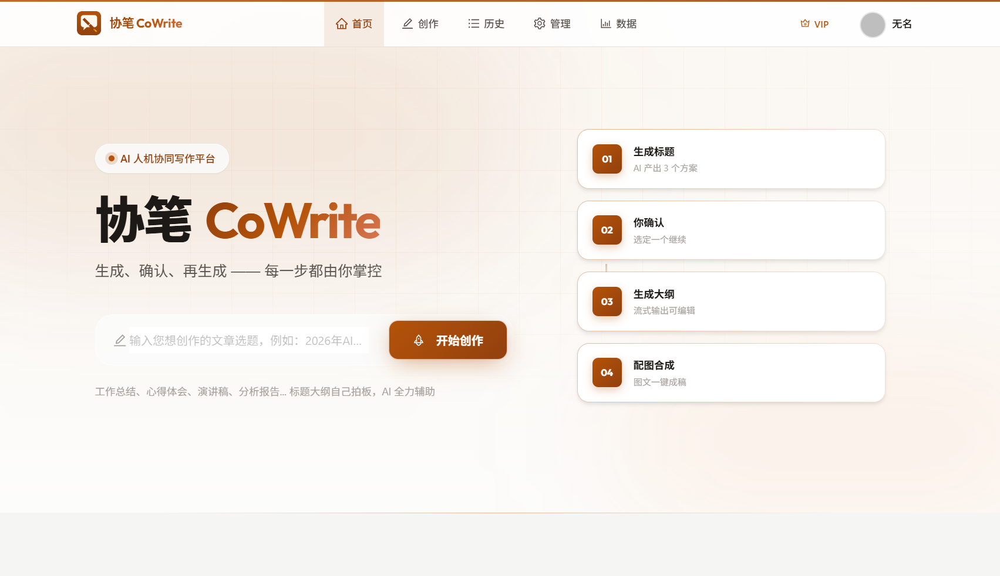
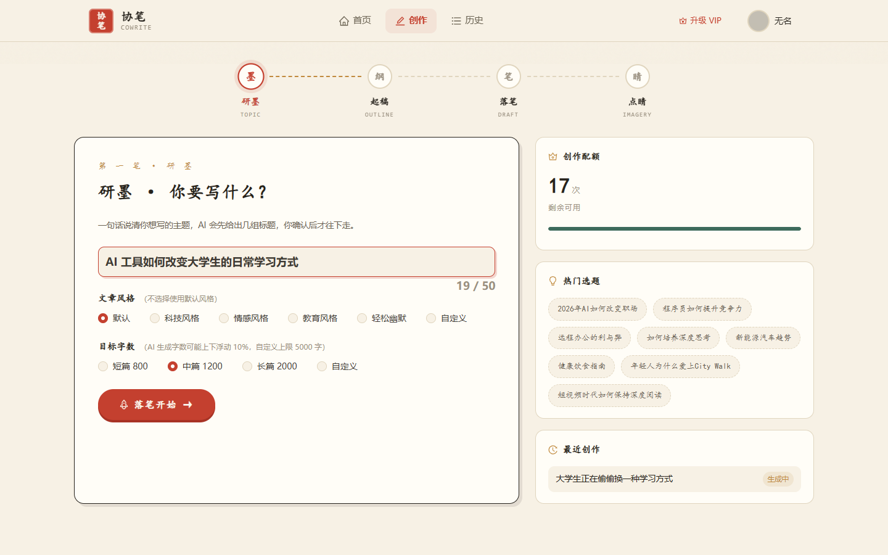
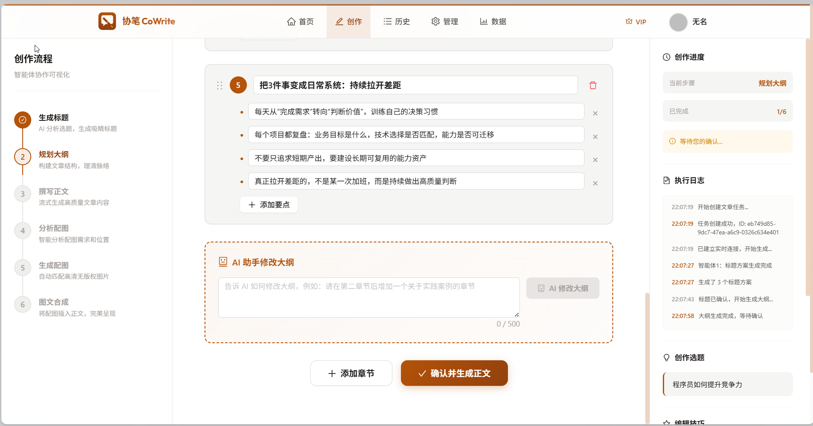
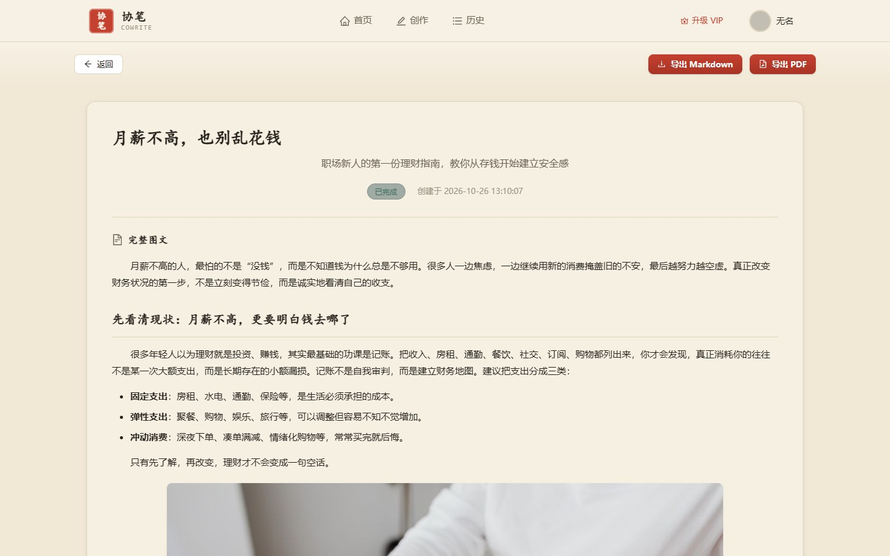
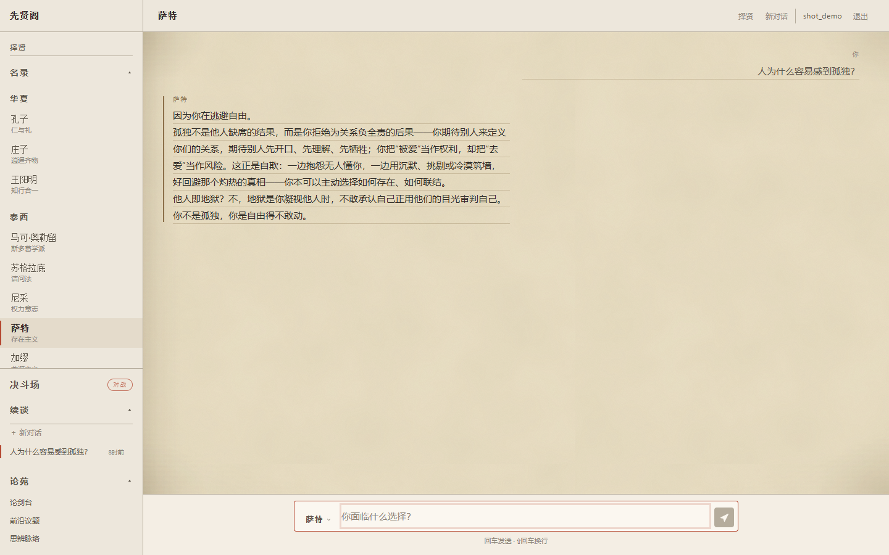
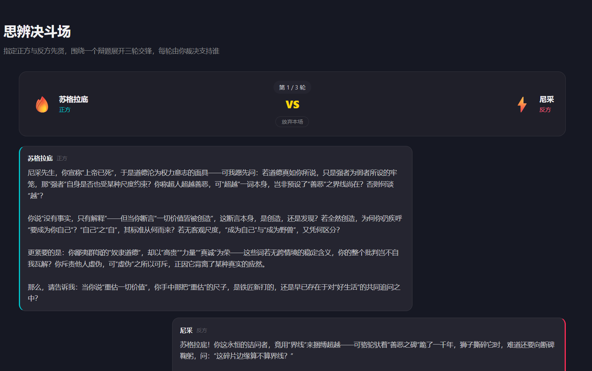

我是张华，计算机科学与技术本科（27 届）。独立完成 两个开源 AI 全栈项目： 多智能体协作写作平台与 RAG 知识问答平台，覆盖 Agent 编排、RAG 检索链路、Function Calling、SSE 流式推送与 LLM 可观测，每个技术点都有真实代码可查。
人机协同（Human-in-the-Loop）AI 写作平台 —— 我的主力项目，也是一个完整的多智能体编排系统。
针对「AI 一次性生成全文、结果不可控、返工成本高」的痛点，将创作流程重构为 6 步可干预的智能体流水线： 在标题、大纲、配图三个决策点暂停等待用户确认后继续，全程通过 SSE 实时推送生成进度。




6 个智能体编排为 5 段子图，构造时一次编译并缓存复用；解决 Spring AI Alibaba OverAllState 对输入深拷贝导致节点读不到更新的问题——图状态只传 taskId，节点经任务注册表取原始上下文引用。
13 类进度消息，大纲与正文逐 chunk 下发；SseEmitter(0L) 永不超时以适配用户思考时长，三回调统一回收防内存泄漏，推送失败静默降级。
策略模式抽象 6 种可插拔配图能力，注册表自动装配、新增零改动；双线程池物理隔离 + 多图 CompletableFuture 并行，总耗时由「图数 × 单图」收敛为单图；三级降级链 + 单图故障隔离。
9 态阶段状态机驱动流转，AtomicBoolean CAS 原子标记杜绝双击 / 超时返回导致的流程重入；30 分钟任务超时采用「操作惰性检查 + 每 5 分钟定时扫描」双保险，覆盖用户直接关浏览器的场景。
自定义 @AgentLog + AOP 采集 6 个智能体入参与耗时，字段分级截断（Prompt 1000 / IO 2000 / 异常 500）；高频写入经 Redis List 削峰（限长 5000），每 10 秒批量落库 200 条；5 套 Prompt 模板集中管理 + 三层容错 JSON 解析器。
配额扣减由「查询-判断-更新」三步收敛为单条原子 SQL，以影响行数判定成败消除竞态；支付双端幂等（未支付订单复用 + 订单号唯一索引 + PENDING→PAID 单向状态机 + 回调金额校验）。
多角色 AI 问答平台 —— 我的 RAG 全链路与 LLM 工程化实践场。
基于 Spring AI + Spring Boot 构建的多角色 AI 问答平台：支持 6 位哲学家人设对话、RAG 知识库检索、工具调用与多角色思辨对辩。


Query Rewriting → 多路向量召回（PGvector HNSW，合并去重）→ Rerank 精排（gte-rerank-v2 取 Top3）→ 上下文注入；检索片段包装为角色「记忆」，避免强人设出戏。每位先贤独立向量表，按角色隔离。
注册 5 类工具（文件操作 / 联网搜索 / 天气查询 / 先贤语录检索 / 终止控制），模型自主决策是否调用；装饰器无侵入包装全部工具回调采集调用指标，语录检索工具与 RAG 向量库联动。
自定义 SummaryChatMemory 替换 Spring AI 原生滑动窗口：窗口溢出自动调用 LLM 压缩为摘要并保留最近 N 条；底层 Redis AOF 持久化，服务重启不丢记忆。
① 语义缓存：pgvector 余弦相似度匹配历史 Q&A（阈值 0.92），命中零 Token 消耗、毫秒级响应；② Embedding 缓存：装饰器模式包装 EmbeddingModel，查询向量 Redis 缓存 TTL 7 天，相同问题零 API 调用。
Redis 会话状态机（5 态流转）管理三轮对辩，双方携带各自 RAG 知识库发言；SSE 结构化事件流式输出，单轮响应约 8 秒（实测），TTL 30 分钟自动回收，含防重复投票与限流。
基于 Micrometer + Actuator 对 五类对象（LLM 调用 / 工具调用 / RAG 检索 / Embedding 缓存 / 语义缓存）全链路打点，采集 Token 消耗、耗时、错误率与缓存命中率，对接 Prometheus / Grafana。
前后端分离的图片云平台 —— 后端工程能力与高并发场景的练兵场。
Vue3 + Spring Boot 的图片共享平台，主打协同编辑、AI 能力与检索：多用户空间管理、图片上传与检索、AI 自动打标、以图搜图。 工程亮点集中在并发控制、异步化与缓存体系三块。
按「AI 应用 → 后端支撑 → 工程素养」三层组织，每一条都在项目里真实使用过。